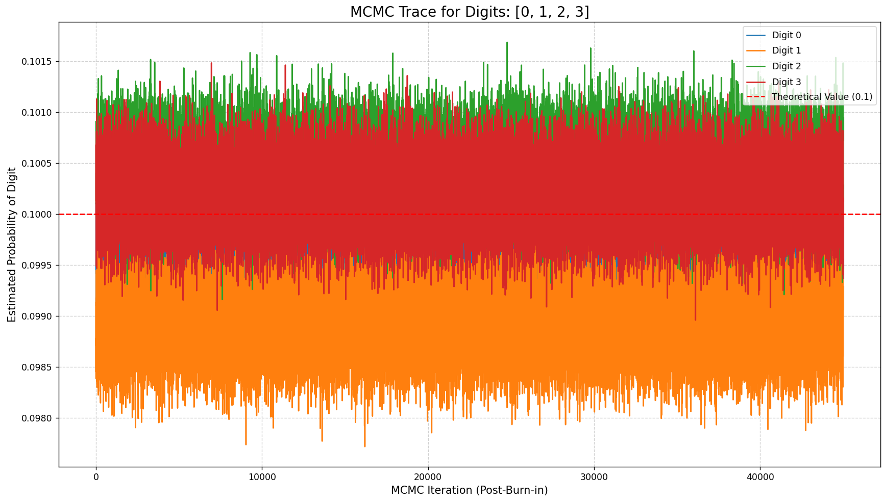
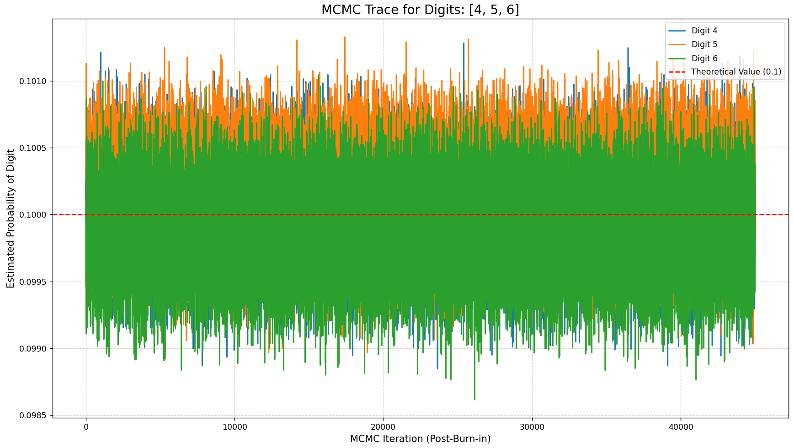
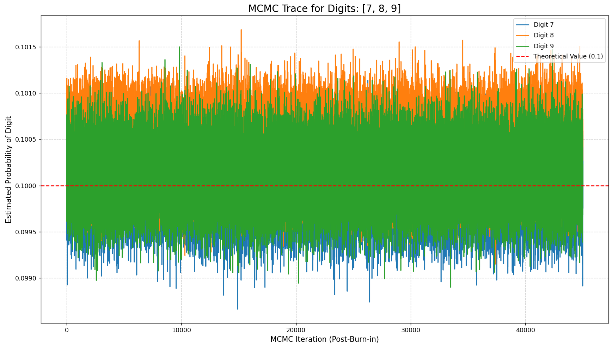
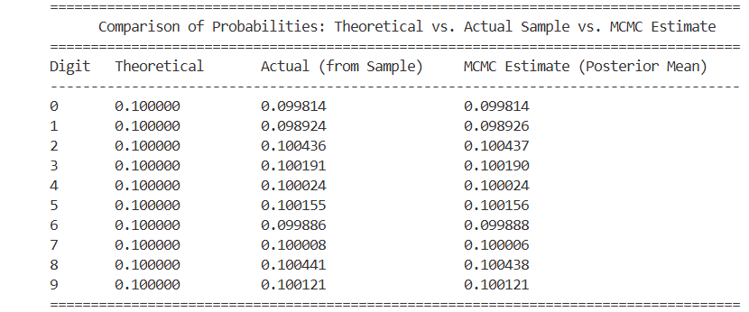
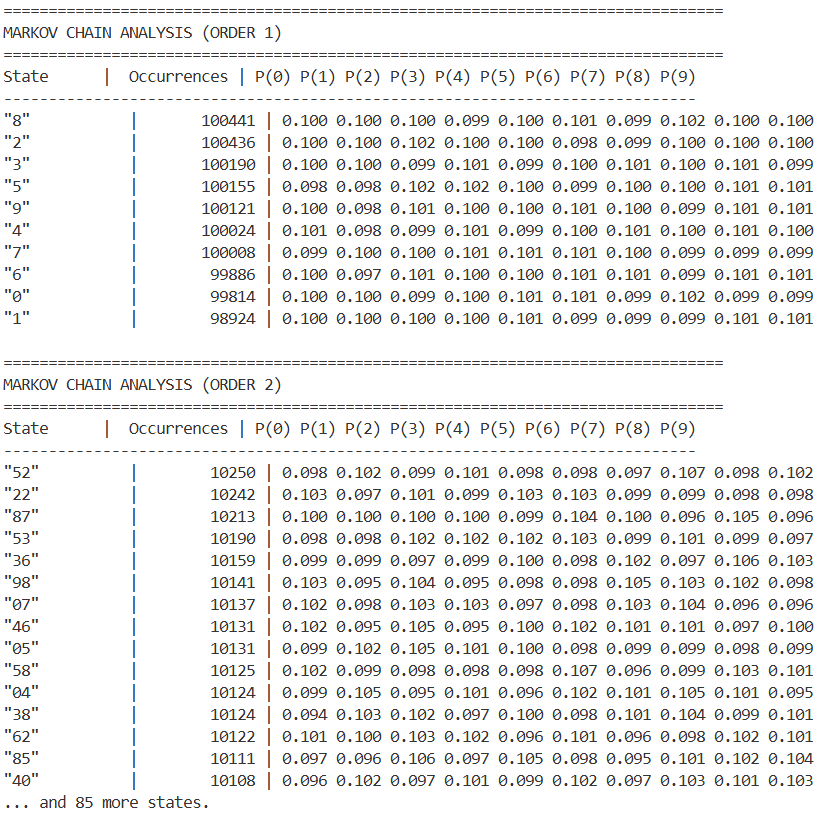
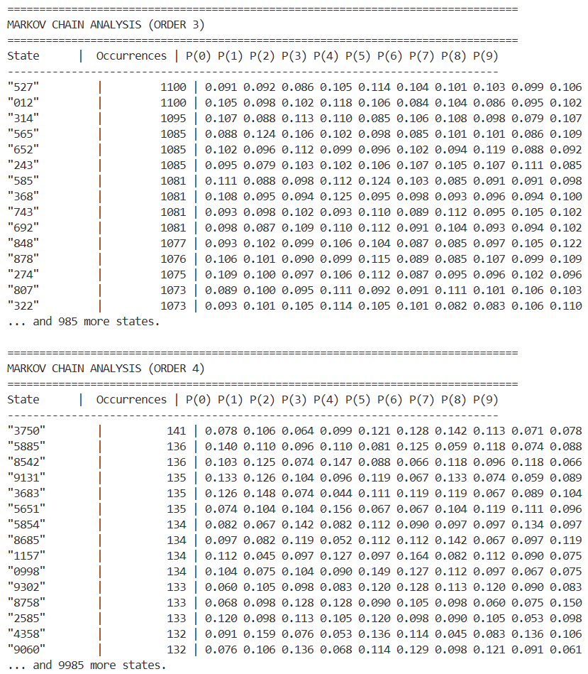
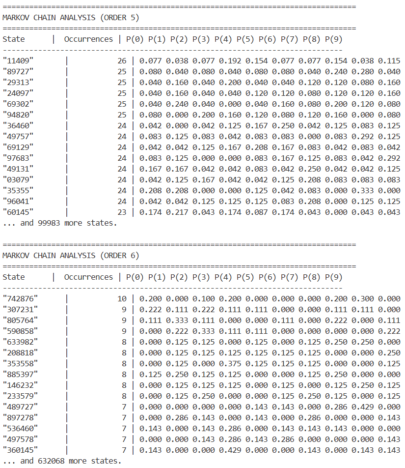
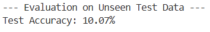

Digits of √2
Aleksander Majkowski
The question of whether the digits of irrational numbers like π or √2 are truly "random" is a classic mathematical unproven
mystery. For this project, we embarked on a two-part computational investigation to test this hypothesis on the digits of the
square root of two. Our work aimed to answer two fundamental questions:
Are the digits uniformly distributed? In other words, is each digit from 0 to 9 equally likely to appear?
Are the digits predictable? Does knowing a sequence of prior digits give us any statistical power to predict the next one?
To do this, we first generated a high-precision dataset of the first one million decimal digits of √2. This large dataset
served as the foundation for our analysis, allowing us to search for even subtle statistical deviations from randomness.
Broader Context: The Role of Irrational Numbers in Cryptography
This investigation has direct relevance to the security of the modern internet, banking, and digital communication.
Many of the world's most critical cryptographic algorithms, including the SHA-256 hashing function that secures everything
from cryptocurrencies to website connections, are built using constants derived from irrational numbers.
Specifically, the initial constants in SHA-256 are derived from the fractional parts of the square roots of the first
eight prime numbers (√2, √3, √5, etc.).
These are known as "nothing up my sleeve" numbers. Their purpose is to demonstrate that the algorithm's designers did
not choose specific, malicious values that could create a hidden backdoor. By using numbers from a well-known, objective
mathematical source whose digits are presumed to be random, they provide trust and assurance in the algorithm's security.
Our project, therefore, serves to empirically test the very assumption of randomness that underpins these vital technologies.
Part 1: Bayesian Analysis of Digit Distribution
Our first objective was to estimate the underlying probability of each digit appearing. While one could simply count the
frequencies, we opted for a more rigorous Bayesian inference approach. We implemented a Gibbs Sampler, a Markov
Chain Monte Carlo (MCMC) method, to derive the full probability distribution for each digit's frequency. This technique
allows us to not only find the most likely probability but also to quantify our uncertainty around that estimate.
By leveraging a statistically elegant model (a Dirichlet-Categorical conjugate prior), we were able to build a highly
efficient sampler. The model was run for 50,000 iterations to ensure it converged to a stable solution.
Python code: sqrt2_MCMC.py
import numpy as np
from decimal import Decimal, getcontext
import collections
import matplotlib.pyplot as plt
from scipy.stats import dirichlet
import os
# ==============================================================================
# PART 1: GENERATE SQRT(2) DIGITS
# ==============================================================================
def generate_sqrt2_digits(num_digits):
"""Generates the decimal digits of sqrt(2) to a specified precision."""
getcontext().prec = num_digits + 5
sqrt_2 = Decimal(2).sqrt()
s = str(sqrt_2)
digits_after_decimal = s.split('.')[1]
return digits_after_decimal[:num_digits]
# ==============================================================================
# PART 2: GIBBS SAMPLER FOR PARAMETER ESTIMATION
# ==============================================================================
def gibbs_sampler_for_parameters(data_counts, num_iterations, burn_in=5000):
"""
Estimates the parameters [p0, p1, ... p9] of a Categorical distribution
using a Gibbs Sampler. This is highly efficient for this model.
The model is: p ~ Dirichlet(alpha), data ~ Categorical(p)
Because the Dirichlet is the conjugate prior for the Categorical, the
posterior distribution of p is also a Dirichlet. We can sample from it directly.
"""
num_params = len(data_counts)
# 1. DEFINE THE PRIOR
# A non-informative prior with alpha=1 for all parameters.
prior_alphas = np.ones(num_params)
# 2. CALCULATE POSTERIOR PARAMETERS
# The posterior is simply Dirichlet(prior_alpha + data_count)
posterior_alphas = prior_alphas + data_counts
# 3. SAMPLE DIRECTLY FROM THE POSTERIOR
print(f"Starting Gibbs sampling for {num_iterations} iterations...")
samples = dirichlet.rvs(alpha=posterior_alphas, size=num_iterations)
print("Sampling complete.")
# 4. DISCARD BURN-IN AND RETURN
return samples[burn_in:]
# ==============================================================================
# PART 3: VISUALIZATION
# ==============================================================================
def plot_digit_traces(digit_history, digits_to_plot):
"""Plots the MCMC trace (convergence) for a subset of the estimated digits."""
plt.figure(figsize=(14, 8))
for i in digits_to_plot:
plt.plot(digit_history[:, i], label=f'Digit ${i}$')
plt.axhline(y=0.1, color='r', linestyle='--', label='Theoretical Value (0.1)')
plt.title(f'MCMC Trace for Digits: {digits_to_plot}', fontsize=16)
plt.xlabel('MCMC Iteration (Post-Burn-in)', fontsize=12)
plt.ylabel('Estimated Probability of Digit', fontsize=12)
plt.legend(loc='upper right')
plt.grid(True, linestyle='--', alpha=0.6)
plt.tight_layout()
if __name__ == "__main__":
# Configuration
FILE_NAME = "digits.txt"
DIGITS_TO_GENERATE = 1_000_000
MCMC_ITERATIONS = 50_000
MCMC_BURN_IN = 5_000
# --- Part 1: Generate/load digits and get observed counts ---
if os.path.exists(FILE_NAME) and os.path.getsize(FILE_NAME) >= DIGITS_TO_GENERATE:
print(f"Loading {DIGITS_TO_GENERATE:,} digits from {FILE_NAME}...")
with open(FILE_NAME, 'r') as f:
digits_str = f.read(DIGITS_TO_GENERATE)
else:
print(f"Generating and saving {DIGITS_TO_GENERATE:,} digits to {FILE_NAME}...")
digits_str = generate_sqrt2_digits(DIGITS_TO_GENERATE)
with open(FILE_NAME, 'w') as f: f.write(digits_str)
# Observed data
digit_counts = collections.Counter(digits_str)
observed_counts = np.array([digit_counts.get(str(d), 0) for d in range(10)])
# --- Part 2: Run the Gibbs sampler to estimate parameters ---
parameter_samples = gibbs_sampler_for_parameters(
data_counts=observed_counts,
num_iterations=MCMC_ITERATIONS,
burn_in=MCMC_BURN_IN
)
# Compare estimated probabilities to theoretical value
estimated_probabilities = np.mean(parameter_samples, axis=0)
# Calculate the actual empirical probabilities directly from our sample
empirical_probs = observed_counts / DIGITS_TO_GENERATE
print("\n" + "="*85)
print(" Comparison of Probabilities: Theoretical vs. Actual Sample vs. MCMC Estimate")
print("="*85)
# Header with a new column for the sample's actual probability
header = (f"{'Digit':<8}{'Theoretical':<18}{'Actual (from Sample)':<25}"
f"{'MCMC Estimate (Posterior Mean)':<30}")
print(header)
print("-"*85)
for digit in range(10):
theoretical_prob = 0.1
empirical_prob = empirical_probs[digit]
mcmc_prob = estimated_probabilities[digit]
print(f"{digit:<8}{theoretical_prob:<18.6f}{empirical_prob:<25.6f}{mcmc_prob:<30.6f}")
print("="*85)
# Visualize results
plot_digit_traces(parameter_samples, [0, 1, 2, 3])
plot_digit_traces(parameter_samples, [4, 5, 6])
plot_digit_traces(parameter_samples, [7, 8, 9])
plt.show()
MCMC Plots
  Digit frequences

MCMC Results and analysis
The results provided powerful evidence for uniform distribution. The estimated probabilities for every digit rapidly
converged to a stable value centered squarely on the theoretical probability of 0.1.
The final estimates from our MCMC model are nearly identical to the raw frequencies in our one-million-digit sample,
both of which were extremely close to the theoretical 10% chance for each digit. This successfully demonstrates that,
based on our large sample, the digits of √2 appear to be perfectly uniformly distributed.
Part 2: Predictive Modeling with Markov Chains and XGBoost
While we showed that distribution of digits is uniform, does that mean we cant find next digit based on previous ones? a great example would be
Champernowne constant
, while having uniform distribution as well, we can definitely say
based on its construction what the next digit should be. But numbers used in cryptography shouldn't have this property, right?
Because of this, the second task is to determine if any predictive patterns exist within the digit sequence. For this, we employed a
dual-pronged approach. First, we conducted a Markov Chain analysis, a classical statistical method that checks
if knowing the last few digits helps predict the next one. We systematically tested this for patterns up to 8 digits long.
Second, to search for more complex, long-range patterns, we built a powerful machine learning model. We trained an
XGBoost classifier, an useful algorithm which will be used to predict the next digit using the previous
1,000 digits as input (from 1st to 1000th lagged digit)
features. If any subtle, non-linear relationships exist, this model is designed to find them.
Python code: sqrt2_XGB.py
import numpy as np
from decimal import Decimal, getcontext
import collections
import time
import os
import xgboost as xgb
from sklearn.metrics import accuracy_score
# ==============================================================================
# PART 1: GENERATE SQRT(2) DIGITS
# ==============================================================================
def generate_sqrt2_digits(num_digits):
"""Generates the decimal digits of sqrt(2) to a specified precision."""
# Set precision: num_digits + a few extra for safety
getcontext().prec = num_digits + 5
# This leverages the highly optimized C implementation within the decimal module
sqrt_2 = Decimal(2).sqrt()
# Convert to string and extract digits
s = str(sqrt_2)
if '.' in s:
digits_after_decimal = s.split('.')[1]
return digits_after_decimal[:num_digits]
return ""
# ==============================================================================
# PART 2: MARKOV CHAIN ANALYSIS IN A TABLE
# ==============================================================================
def run_full_markov_analysis(digits, max_order):
"""Performs Markov Chain analysis up to max_order and prints the results."""
for order in range(1, max_order + 1):
if len(digits) <= order:
print(f"\nNot enough digits to perform Markov analysis of order {order}.")
continue
print(f"\n{'=' * 80}")
print(f"MARKOV CHAIN ANALYSIS (ORDER {order})")
print(f"{'=' * 80}")
# Calculate transition counts
transition_counts = collections.defaultdict(lambda: collections.defaultdict(int))
for i in range(len(digits) - order):
state = digits[i : i + order]
next_digit = digits[i + order]
transition_counts[state][next_digit] += 1
# Sort states by the number of times they appeared, descending
sorted_states = sorted(transition_counts.items(), key=lambda item: sum(item[1].values()), reverse=True)
# Print table header
header = f"{'State':<10} | {'Occurrences':>12} | " + " ".join([f"P({d})" for d in range(10)])
print(header)
print("-" * len(header))
# Print top 15 most frequent states for brevity
for state, next_counts in sorted_states[:15]:
total_transitions = sum(next_counts.values())
# Create a list of probabilities for each next digit (0-9)
probabilities = [next_counts.get(str(d), 0) / total_transitions for d in range(10)]
# Format the probability strings
prob_strings = " ".join([f"{p:^5.3f}" for p in probabilities])
print(f'"{state}"{"" :<{11 - len(state)}} | {total_transitions:>12} | {prob_strings}')
if len(sorted_states) > 15:
print(f"... and {len(sorted_states) - 15} more states.")
# ==============================================================================
# PART 3: XGBOOST DATA PREPARATION
# ==============================================================================
def prepare_nn_data(digits, sequence_length):
"""Prepares data for the XGBoost Classifier by creating a tabular dataset."""
int_digits = [int(d) for d in digits]
predictors = []
labels = []
for i in range(len(int_digits) - sequence_length):
# The 'sequence' of digits is the feature vector (row)
predictors.append(int_digits[i : i + sequence_length])
# The digit immediately following the sequence is the label
labels.append(int_digits[i + sequence_length])
# Reshape to (N_samples, sequence_length) - a standard tabular format
return np.array(predictors).reshape(-1, sequence_length), np.array(labels)
# ==============================================================================
# PART 4: XGBOOST TRAINING AND EVALUATION
# ==============================================================================
def train_and_evaluate_xgb(predictors, labels):
"""Trains and evaluates an XGBoost Classifier with a proper train-test split."""
print(f"\n{'=' * 80}")
print("XGBOOST CLASSIFIER TRAINING AND EVALUATION")
print(f"{'=' * 80}")
# Split the data into a sequential training and a testing set (80/20)
split_index = int(len(predictors) * 0.8)
X_train, X_test = predictors[:split_index], predictors[split_index:]
y_train, y_test = labels[:split_index], labels[split_index:]
print(f"Training on {X_train.shape[0]:,} samples.")
print(f"Testing on {X_test.shape[0]:,} samples.")
model = xgb.XGBClassifier(
objective='multi:softmax',
num_class=10,
n_estimators=100,
max_depth=5,
learning_rate=0.1,
eval_metric='merror',
n_jobs=-1,
random_state=42
)
print("\nStarting training...")
start_time = time.perf_counter()
# Train the model on the training data
model.fit(X_train, y_train)
elapsed_time = time.perf_counter() - start_time
print(f"Training complete in: {elapsed_time:.2f} seconds.")
# Evaluate the model on the unseen test data
y_pred = model.predict(X_test)
# Calculate accuracy on the test set
accuracy = accuracy_score(y_test, y_pred)
print(f"\n--- Evaluation on Unseen Test Data ---")
print(f"Test Accuracy: {accuracy * 100:.2f}%")
# ==============================================================================
# MAIN EXECUTION WITH BENCHMARK AND FILE SAVING
# ==============================================================================
if __name__ == "__main__":
# --- Configuration ---
FILE_NAME = "digits.txt"
DIGITS_TO_GENERATE = 1_000_000
MARKOV_MAX_ORDER = 8
NN_SEQUENCE_LENGTH = 1_000 # Sequence length for the predictor (no. of lagged features for XGBoost)
digits_str = None
# --- Check, generate, and save/load ---
if os.path.exists(FILE_NAME):
print(f"\nLoading {DIGITS_TO_GENERATE:,} digits from {FILE_NAME}...")
with open(FILE_NAME, 'r') as f:
digits_str = f.read()
# Ensure the loaded string has the correct length
digits_str = digits_str[:DIGITS_TO_GENERATE]
print(f"Loaded {len(digits_str):,} digits.")
else:
print(f"\nFile not found. Generating and saving {DIGITS_TO_GENERATE:,} digits to {FILE_NAME}...")
start_time = time.perf_counter()
digits_str = generate_sqrt2_digits(DIGITS_TO_GENERATE)
elapsed_time = time.perf_counter() - start_time
print(f"Generation Time ({DIGITS_TO_GENERATE:,} digits): {elapsed_time:.2f} seconds.")
with open(FILE_NAME, 'w') as f:
f.write(digits_str)
print(f"Digits saved to {FILE_NAME}.")
# --- Run analysis on the digits ---
if digits_str:
# --- Markov chain analysis loop ---
run_full_markov_analysis(digits_str, max_order=MARKOV_MAX_ORDER)
# --- XGBoost Classifier ---
# The data preparation is the most memory-intensive step
print(f"\n--- Preparing Data for XGBoost (Sequence Length: {NN_SEQUENCE_LENGTH}) ---")
X, y = prepare_nn_data(digits_str, NN_SEQUENCE_LENGTH)
# Train and evaluate the XGBoost model
train_and_evaluate_xgb(X, y)
else:
print("Error: Could not obtain digits for analysis.")
Markov chain results
  
XGBoost results

Markov chains and XGBoost results analysis
This phase of the project decisively showed a lack of predictability. Our Markov analysis revealed
that even when knowing up to the preceding 8 digits, the probabilities for the next digit remained stubbornly
close to 0.1 for all outcomes. No short-term patterns could be found.
The machine learning model provided the final confirmation. After training on nearly 800 000 examples, and testing
on 200 000 examples
the XGBoost classifier achieved a test accuracy of 10.07%. In a problem with 10 possible outcomes
(digits 0-9), an accuracy of 10% is the baseline for pure random guessing. The model’s inability to
perform any better than chance strongly implies that there are no discernible predictive patterns in
the sequence, even over very long ranges.
In conclusion, this comprehensive investigation successfully combined Bayesian statistics and machine
learning to rigorously test a very important mathematical hypothesis. Our findings reinforce the very properties
of randomness and unpredictability that make numbers like √2 a trustworthy foundation for the cryptographic
standards that secure our digital world.